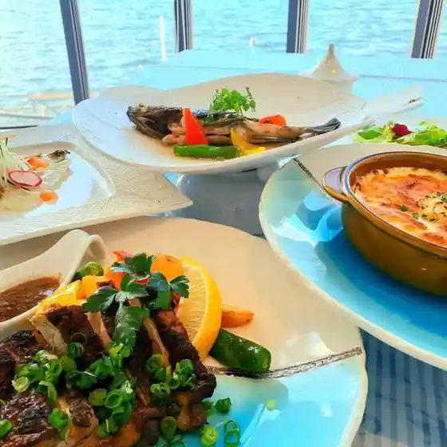
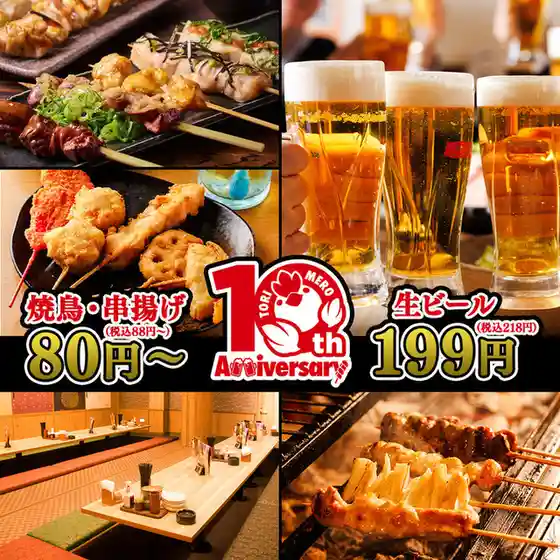
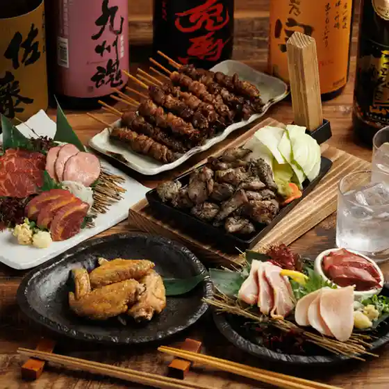
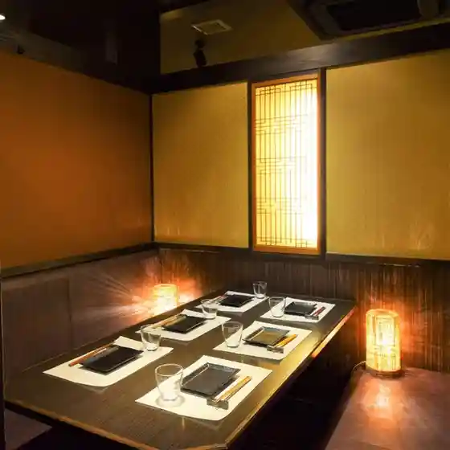
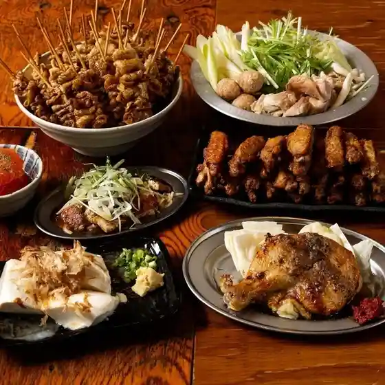
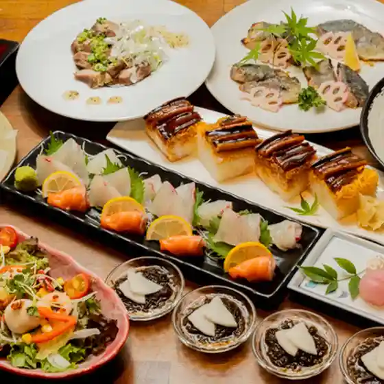
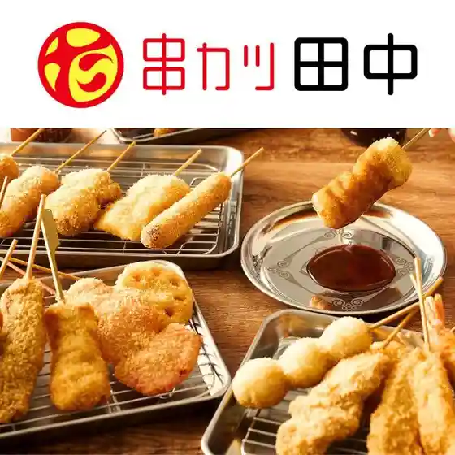
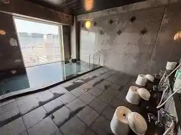
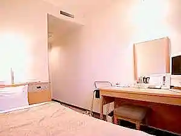

Shunan
Shunan · Yamaguchi
Shunan
Highlighted on the Yamaguchi map.

Sights
Shunan Kojo Yakei

Kaiten Memorial Museum

Ka no ’n Koto Seiryu Fes.

Otsu Shima

Yuno Onsen
Shunan Tokuyama Zoo
Kanyo Tera (Shosho Hakkei no Niwa) Tokubetsu Kokai to Zazen Experience
Roadside Station Sorene Shunan
Harumi Shinsui Park
Rezonakku Eigen Yama Park (Eigen Yama Park)
Kanko Ressha WEST EXPRESS Ginga
Kanyo Tera
Su Kin Furutsu Land
Shunan Bijutsu Museum
Yatsushiro no Tsuru Oyobiso no Torai Chi
Kaiten Kunren Kichiato
Kochi Zu Wo Katate Nimachiwo Aruko U (Tokuyama Hen)
Kaiten Memorial Museum Tokubetsuten
Shunan Green Park
San Oka Yume Plaza (Manabi no Isu)
Seseragi Yutaka Shika Sato Park
Chon Hora
Taika Yama
Kawasaki Kannon
Kodama Shrine
Wakayama Castle Ruins
Yamazaki Hachiman Shrine
Nagata Beach Seaside Park
En Ishi Hachiman Shrine
Kuroiwa Kyo
Ishifune Onsen Seseragi Yutaka Shika Sato Park
Takase San Supotsu Land Campground
Takase Kyo
Ishifune Onsen
Midori to Bunka no Puromunado Sakura Namiki
Sanko Tera
Jogagaku
Seiryu Tori
Shunan Kyodo Bijutsu Museum Ozaki Masaki Memorial Museum
Takase Mizumi
Otsu Shima Fureai Center
Terashima Chuzaburo Kanren Historic Site
Shinpeigahara Park
Shunan Otawara Nature no Ie
Ni Tokoro Yamada Shrine
Ko Tsuru Onsen
Shunan Yasuda no Ito Ayatsuri Ningyo Shibai
Nagano Yama Green Park
Katsuei Tera Dorui Oyobi Kyu Keidai
Otsu Shima Umi no Sato
Shunan Kanko Boranteiagaido no Kai
Tokuyama Mori Ie Hakasho
Mori Motonari Ko Ha Byo
Ryubun Tera
Otama Sugi (Hiryu Hachiman Shrine)
Tokuyama Mori Jinya Ato
Yoshida Shoin to Terashima Chuzaburo Ketsubetsu no Chi
Shi Kumagagaku Haikingukosu
Sakana Setsu Falls
Eboshi Gaku Uddo Park
Yamada Kahon Ya
San Oka Onsen
Taiyo Tera
Aka Taki
Kano Tenjin Yama Park
Kanno Mizumi
to no Michi Wakayama Shiro Tojo no Michi
Mitake
Wakayama Park
Yuno Kannon Gaku Haikingukosu
Ryuun Tera
Danjo Itozakura
Kuni Toroku Yukei Bunkazai Kyu City Cho Kosha
Masuda Oya Shi Yuhei Tamamono Tsurugi Yuki Chi
Shikinai Odori
Ishigagaku
Sengoku Gaku
Yobisaka Shukueki Honjin Ato
Kuniji Oya So Yuhei Tamamono Tsurugi Yuki Chi
Dakeyama
Niiho Tsu Kagura
Shi Kumagagaku
Yamazaki Taishi no Hakasho
Ju Yama
Fukukawa Honjin Ato
Taiyo Tera Garden
Go Kyo to Riku Tokoro
Majima Yasohachigatokoro Meguri
Heike Odori
Ogauchi Kagura
San Sakugami Raku
Tenjin Yama Park / Sasayuri
Sansa Odori
Kanematsu Sakura
Kubo Kagura
Daigara Odori
Ko Michi Mizumi
Yu Tsuru Chi (Tsuru no Haka)
Sugi Moto So Fushi no Hakasho
Nishikawa Uchigami Raku
Shinhata Kamimai
Cho Ho Nembutsu Yo
Wakayama
Kami Odori
Sadamasa Tera
Fukuhara Moto Hei Yuki Chi
Tsutsumi Ku Yado Nyu Yatsu
Daido Ri Kominkan Shuhen / Hotaru
Rei Michi Tsue Odori
Yoshino O no Kuzushi Odori
Burari Yuno Onsen Haikingukosu
Yagen Tani Ichiri Tsuka
Terashima Chuzaburo Tanjo no Chi
Kan Tsuzumi Yo
Nagamochiuta
Teodori Ri
Karyu Yo
Shunan Yakusho
Dining
レストラン シーホース
Resutoran Shiihoosu

三代目 鳥メロ 徳山店
Sandaime Tori Mero Tokuyama Mise

博多もつ鍋 馬肉 九州自慢 徳山店
Hakata Motsu Nabe Baniku Kyuushuu Jiman Tokuyama Mise

縁 徳山駅前店
Heri Tokuyama Ekimae Mise

個室完備 大衆とり酒場 とりいちず 山口徳山店
Koshitsu Kanbi Taishuu Tori Sakaba Toriichizu Yamaguchi Tokuyama Mise

完全個室 ここ一軒で山口県 わらやき吉祥 徳山店
Kanzenkoshitsu Koko Ikken De Yamaguchiken Warayaki Kichijou Tokuyama Mise

串カツ田中 周南店
Kushi Katsu Tanaka Shuunan Mise

や台ずし 徳山駅前町
Ya Dai Zushi Tokuyama Ekimae Machi

Kitchen RICO
Kitchen Rico
牛角 徳山店
Gyuukaku Tokuyama Mise
八剣伝 新南陽駅前店
Yatsurugi Den Shinnanyou Ekimae Mise
焼肉ホルモン金龍 本店
Yakiniku Horumon Kinryuu Honten
BBQ酒場イチバンチョウバル みなみ銀座店
Bbq Sakaba Ichibanchoubaru Minami Ginza Mise
炭火焼肉 ホルモン横丁 徳山店
Sumibi Yakiniku Horumon Yokochou Tokuyama Mise
炭火焼肉 ホルモン横丁 新南陽駅前店
Sumibi Yakiniku Horumon Yokochou Shinnanyou Ekimae Mise
もつ蔵 徳山店
Motsu Kura Tokuyama Mise
焼き鳥 マル八 周南
Yakitori Maru Hachi Shuunan
メープルヒル
Meepuruhiru
目利きの銀次 徳山みゆき口駅前店
Mekiki Kino Ginji Tokuyama Miyuki Kuchi Ekimae Mise
福の花 徳山店
Fuku No Hana Tokuyama Mise
3tree
3Tree
炭火焼鳥しゃかりき
Sumibi Yakitori Shakariki
串焼き 地魚 旨飯 周南Diningぜん 徳山駅前店
Kushiyaki Jizakana Mune Meshi Shuunan Dining Zen Tokuyama Ekimae Mise
白うさぎに誘われて
Shiro Usagini Sasowa Rete
さば料理専門店 SABAR+ 徳山銀座店
Saba Ryouri Senmonten Sabar+ Tokuyama Ginza Mise
焼肉・ホルモン 金龍 新南陽店
Yakiniku ・Horumon Kinryuu Shinnanyou Mise
居食屋 蛍
Kyo Shoku Ya Hotaru
全席完全個室 九州鶏料理居酒屋よか鶏 周南市徳山店
Zenseki Kanzenkoshitsu Kyuushuu Niwatori Ryouri Izakaya Yoka Niwatori Shuunan Shi Tokuyama Mise
黒毛和牛専門店 炭火焼肉 ぶち 周南店
Kuroge Wagyuu Senmonten Sumibi Yakiniku Buchi Shuunan Mise
寿司 魚政
Sushi Uomasa
Restaurant & Bar CHARRY’S
Restaurant &Amp; Bar Charry ’ S
アオゾラテーブル
Aozorateeburu
匠 18番館
Takumi 18 Ban Kan
栄ふく
Sakae Fuku
鉄板処 犇
Teppan Tokoro Hon
mucu mucu
Mucu Mucu
創作料理 呑生
Sousaku Ryouri Don Nama
イタリアン酒場 Osteria goloso
Itarian Sakaba Osteria Goloso
中国料理 敦煌 山口周南店
Chuugokuryouri Tonkou Yamaguchi Shuunan Mise
炭火 富川
Sumibi Tomikawa
パリクロアッサン 桜馬場店
Parikuroassan Sakura Baba Mise
百日紅
Sarusuberi
TOTOMATO 周南店
Totomato Shuunan Mise
Cream
Cream
ＫＯＫＡＩ
K O K A I
寿しんぼ
Hisashi Shinbo
たわら 銀座本店
Tawara Ginza Honten
花々亭
Hana (Kurikaesi) Tei
ほっともっと 遠石店
Hottomotto En Ishi Mise
花百
Hana Hyaku
HANOI KITCHEN
Hanoi Kitchen
キーストン
Kiisuton
赤鬼
Akaoni
餃子大将
Gyouza Taishou
三丘文庫
San Oka Bunko
髙美食堂
Shokudou
THE BAKERS LOAF 周南店
The Bakers Loaf Shuunan Mise
セブンイレブン 周南築港町店
Sebun'Irebun Shuunan Chikkou Machi Mise
Hide-out
Hide-Out
カフェファディ 徳山店
Kafefadi Tokuyama Mise
Teuchiudonkukai Shunan Yamaguchi Prefecture Chugoku
Teuchiudonkukai Shunan Yamaguchi Prefecture Chugoku
Teuchiudonkukai Shunan Yamaguchi Prefecture Chugoku
Teuchiudonkukai Shunan Yamaguchi Prefecture Chugoku
Teuchiudonkukai Shunan Yamaguchi Prefecture Chugoku
Teuchiudonkukai Shunan Yamaguchi Prefecture Chugoku
Teuchiudonkukai Shunan Yamaguchi Prefecture Chugoku
Teuchiudonkukai Shunan Yamaguchi Prefecture Chugoku
Nokaresutorantanuki Shunan Yamaguchi Prefecture Chugoku
Nokaresutorantanuki Shunan Yamaguchi Prefecture Chugoku
Nokaresutorantanuki Shunan Yamaguchi Prefecture Chugoku
Nokaresutorantanuki Shunan Yamaguchi Prefecture Chugoku
Nokaresutorantanuki Shunan Yamaguchi Prefecture Chugoku
Nokaresutorantanuki Shunan Yamaguchi Prefecture Chugoku
Nokaresutorantanuki Shunan Yamaguchi Prefecture Chugoku
Nokaresutorantanuki Shunan Yamaguchi Prefecture Chugoku
Shorotei Shunan Yamaguchi Prefecture Chugoku
Shorotei Shunan Yamaguchi Prefecture Chugoku
Shorotei Shunan Yamaguchi Prefecture Chugoku
Shorotei Shunan Yamaguchi Prefecture Chugoku
Shorotei Shunan Yamaguchi Prefecture Chugoku
Shorotei Shunan Yamaguchi Prefecture Chugoku
Shorotei Shunan Yamaguchi Prefecture Chugoku
Shorotei Shunan Yamaguchi Prefecture Chugoku
Tres F B C Shunan Yamaguchi Prefecture Chugoku
Tres F B C Shunan Yamaguchi Prefecture Chugoku
Tres F B C Shunan Yamaguchi Prefecture Chugoku
Tres F B C Shunan Yamaguchi Prefecture Chugoku
Tres F B C Shunan Yamaguchi Prefecture Chugoku
Tres F B C Shunan Yamaguchi Prefecture Chugoku
Tres F B C Shunan Yamaguchi Prefecture Chugoku
Tres F B C Shunan Yamaguchi Prefecture Chugoku
Ikazaki Shunan Yamaguchi Prefecture Chugoku
Ikazaki Shunan Yamaguchi Prefecture Chugoku
Ikazaki Shunan Yamaguchi Prefecture Chugoku
Ikazaki Shunan Yamaguchi Prefecture Chugoku
Ikazaki Shunan Yamaguchi Prefecture Chugoku
Ikazaki Shunan Yamaguchi Prefecture Chugoku
Ikazaki Shunan Yamaguchi Prefecture Chugoku
Ikazaki Shunan Yamaguchi Prefecture Chugoku
Restaurant Ocem Shunan Yamaguchi Prefecture Chugoku
Restaurant Ocem Shunan Yamaguchi Prefecture Chugoku
Restaurant Ocem Shunan Yamaguchi Prefecture Chugoku
Restaurant Ocem Shunan Yamaguchi Prefecture Chugoku
Restaurant Ocem Shunan Yamaguchi Prefecture Chugoku
Restaurant Ocem Shunan Yamaguchi Prefecture Chugoku
Restaurant Ocem Shunan Yamaguchi Prefecture Chugoku
Restaurant Ocem Shunan Yamaguchi Prefecture Chugoku
Shokuraku Dokoro Kawanishi Shunan Yamaguchi Prefecture Chugoku
Shokuraku Dokoro Kawanishi Shunan Yamaguchi Prefecture Chugoku
Shokuraku Dokoro Kawanishi Shunan Yamaguchi Prefecture Chugoku
Shokuraku Dokoro Kawanishi Shunan Yamaguchi Prefecture Chugoku
Shokuraku Dokoro Kawanishi Shunan Yamaguchi Prefecture Chugoku
Shokuraku Dokoro Kawanishi Shunan Yamaguchi Prefecture Chugoku
Shokuraku Dokoro Kawanishi Shunan Yamaguchi Prefecture Chugoku
Shokuraku Dokoro Kawanishi Shunan Yamaguchi Prefecture Chugoku
Sandaime Torimero Tokuyama Shunan Yamaguchi Prefecture Chugoku
Sandaime Torimero Tokuyama Shunan Yamaguchi Prefecture Chugoku
Sandaime Torimero Tokuyama Shunan Yamaguchi Prefecture Chugoku
Sandaime Torimero Tokuyama Shunan Yamaguchi Prefecture Chugoku
Sandaime Torimero Tokuyama Shunan Yamaguchi Prefecture Chugoku
Sandaime Torimero Tokuyama Shunan Yamaguchi Prefecture Chugoku
Ramen Namiki Seikaichiba Shunan Yamaguchi Prefecture Chugoku
Ramen Namiki Seikaichiba Shunan Yamaguchi Prefecture Chugoku
Ramen Namiki Seikaichiba Shunan Yamaguchi Prefecture Chugoku
Ramen Namiki Seikaichiba Shunan Yamaguchi Prefecture Chugoku
Ramen Namiki Seikaichiba Shunan Yamaguchi Prefecture Chugoku
Ramen Namiki Seikaichiba Shunan Yamaguchi Prefecture Chugoku
Ramen Namiki Seikaichiba Shunan Yamaguchi Prefecture Chugoku
Ramen Namiki Seikaichiba Shunan Yamaguchi Prefecture Chugoku
Tonkatsu Hamakatsu Shinnanyo Eigenzan Shunan Yamaguchi Prefecture Chugoku
Tonkatsu Hamakatsu Shinnanyo Eigenzan Shunan Yamaguchi Prefecture Chugoku
Tonkatsu Hamakatsu Shinnanyo Eigenzan Shunan Yamaguchi Prefecture Chugoku
Tonkatsu Hamakatsu Shinnanyo Eigenzan Shunan Yamaguchi Prefecture Chugoku
Tonkatsu Hamakatsu Shinnanyo Eigenzan Shunan Yamaguchi Prefecture Chugoku
Tonkatsu Hamakatsu Shinnanyo Eigenzan Shunan Yamaguchi Prefecture Chugoku
Tonkatsu Hamakatsu Shinnanyo Eigenzan Shunan Yamaguchi Prefecture Chugoku
Tonkatsu Hamakatsu Shinnanyo Eigenzan Shunan Yamaguchi Prefecture Chugoku
Bamboo Italian Restaurant Shunan Yamaguchi Prefecture Chugoku
Bamboo Italian Restaurant Shunan Yamaguchi Prefecture Chugoku
Bamboo Italian Restaurant Shunan Yamaguchi Prefecture Chugoku
Bamboo Italian Restaurant Shunan Yamaguchi Prefecture Chugoku
Bamboo Italian Restaurant Shunan Yamaguchi Prefecture Chugoku
Bamboo Italian Restaurant Shunan Yamaguchi Prefecture Chugoku
Bamboo Italian Restaurant Shunan Yamaguchi Prefecture Chugoku
Bamboo Italian Restaurant Shunan Yamaguchi Prefecture Chugoku
Zona Italianatokuyama Shunan Yamaguchi Prefecture Chugoku
Zona Italianatokuyama Shunan Yamaguchi Prefecture Chugoku
Zona Italianatokuyama Shunan Yamaguchi Prefecture Chugoku
Zona Italianatokuyama Shunan Yamaguchi Prefecture Chugoku
Zona Italianatokuyama Shunan Yamaguchi Prefecture Chugoku
Zona Italianatokuyama Shunan Yamaguchi Prefecture Chugoku
Zona Italianatokuyama Shunan Yamaguchi Prefecture Chugoku
Zona Italianatokuyama Shunan Yamaguchi Prefecture Chugoku
Fukuno Hana Tokuyama Shunan Yamaguchi Prefecture Chugoku
Fukuno Hana Tokuyama Shunan Yamaguchi Prefecture Chugoku
Fukuno Hana Tokuyama Shunan Yamaguchi Prefecture Chugoku
Fukuno Hana Tokuyama Shunan Yamaguchi Prefecture Chugoku
Fukuno Hana Tokuyama Shunan Yamaguchi Prefecture Chugoku
Fukuno Hana Tokuyama Shunan Yamaguchi Prefecture Chugoku
Fukuno Hana Tokuyama Shunan Yamaguchi Prefecture Chugoku
Fukuno Hana Tokuyama Shunan Yamaguchi Prefecture Chugoku
Takenodai Shunan Yamaguchi Prefecture Chugoku
Takenodai Shunan Yamaguchi Prefecture Chugoku
Takenodai Shunan Yamaguchi Prefecture Chugoku
Takenodai Shunan Yamaguchi Prefecture Chugoku
Takenodai Shunan Yamaguchi Prefecture Chugoku
Takenodai Shunan Yamaguchi Prefecture Chugoku
Takenodai Shunan Yamaguchi Prefecture Chugoku
Takenodai Shunan Yamaguchi Prefecture Chugoku
Indoryoriganeju Shunan Yamaguchi Prefecture Chugoku
Indoryoriganeju Shunan Yamaguchi Prefecture Chugoku
Indoryoriganeju Shunan Yamaguchi Prefecture Chugoku
Indoryoriganeju Shunan Yamaguchi Prefecture Chugoku
Bamboo Italian Restaurant Shunan Yamaguchi Prefecture Chugoku
Bamboo Italian Restaurant Shunan Yamaguchi Prefecture Chugoku
Bamboo Italian Restaurant Shunan Yamaguchi Prefecture Chugoku
Bamboo Italian Restaurant Shunan Yamaguchi Prefecture Chugoku
Cafe Club Mill Shunan Yamaguchi Prefecture Chugoku
Cafe Club Mill Shunan Yamaguchi Prefecture Chugoku
Cafe Club Mill Shunan Yamaguchi Prefecture Chugoku
Cafe Club Mill Shunan Yamaguchi Prefecture Chugoku
Tres F B C Shunan Yamaguchi Prefecture Chugoku
Tres F B C Shunan Yamaguchi Prefecture Chugoku
Tres F B C Shunan Yamaguchi Prefecture Chugoku
Tres F B C Shunan Yamaguchi Prefecture Chugoku
Shorotei Shunan Yamaguchi Prefecture Chugoku
Shorotei Shunan Yamaguchi Prefecture Chugoku
Shorotei Shunan Yamaguchi Prefecture Chugoku
Shorotei Shunan Yamaguchi Prefecture Chugoku
Manpukuen Yakiniku Shunan Yamaguchi Prefecture Chugoku
Manpukuen Yakiniku Shunan Yamaguchi Prefecture Chugoku
Manpukuen Yakiniku Shunan Yamaguchi Prefecture Chugoku
Manpukuen Yakiniku Shunan Yamaguchi Prefecture Chugoku
Nokaresutorantanuki Shunan Yamaguchi Prefecture Chugoku
Nokaresutorantanuki Shunan Yamaguchi Prefecture Chugoku
Nokaresutorantanuki Shunan Yamaguchi Prefecture Chugoku
Nokaresutorantanuki Shunan Yamaguchi Prefecture Chugoku
Starbucks Coffee Shunan Yamaguchi Prefecture Chugoku
Starbucks Coffee Shunan Yamaguchi Prefecture Chugoku
Starbucks Coffee Shunan Yamaguchi Prefecture Chugoku
Starbucks Coffee Shunan Yamaguchi Prefecture Chugoku
Orenjikafe Shunan Yamaguchi Prefecture Chugoku
Orenjikafe Shunan Yamaguchi Prefecture Chugoku
Orenjikafe Shunan Yamaguchi Prefecture Chugoku
Orenjikafe Shunan Yamaguchi Prefecture Chugoku
Kume Pizza Lumaca Shunan Yamaguchi Prefecture Chugoku
Kume Pizza Lumaca Shunan Yamaguchi Prefecture Chugoku
Kume Pizza Lumaca Shunan Yamaguchi Prefecture Chugoku
Kume Pizza Lumaca Shunan Yamaguchi Prefecture Chugoku
Kume Pizza Lumaca Shunan Yamaguchi Prefecture Chugoku
Kume Pizza Lumaca Shunan Yamaguchi Prefecture Chugoku
Kume Pizza Lumaca Shunan Yamaguchi Prefecture Chugoku
Kume Pizza Lumaca Shunan Yamaguchi Prefecture Chugoku
Jolly Ox Tokuyama Shunan Yamaguchi Prefecture Chugoku
Jolly Ox Tokuyama Shunan Yamaguchi Prefecture Chugoku
Jolly Ox Tokuyama Shunan Yamaguchi Prefecture Chugoku
Jolly Ox Tokuyama Shunan Yamaguchi Prefecture Chugoku
Jolly Ox Tokuyama Shunan Yamaguchi Prefecture Chugoku
Jolly Ox Tokuyama Shunan Yamaguchi Prefecture Chugoku
Jolly Ox Tokuyama Shunan Yamaguchi Prefecture Chugoku
Jolly Ox Tokuyama Shunan Yamaguchi Prefecture Chugoku
Torisoba Kaworu Shunan Yamaguchi Prefecture Chugoku
Torisoba Kaworu Shunan Yamaguchi Prefecture Chugoku
Torisoba Kaworu Shunan Yamaguchi Prefecture Chugoku
Torisoba Kaworu Shunan Yamaguchi Prefecture Chugoku
Torisoba Kaworu Shunan Yamaguchi Prefecture Chugoku
Torisoba Kaworu Shunan Yamaguchi Prefecture Chugoku
Torisoba Kaworu Shunan Yamaguchi Prefecture Chugoku
Torisoba Kaworu Shunan Yamaguchi Prefecture Chugoku
Sakae Fuku Shunan Yamaguchi Prefecture Chugoku
Sakae Fuku Shunan Yamaguchi Prefecture Chugoku
Sakae Fuku Shunan Yamaguchi Prefecture Chugoku
Sakae Fuku Shunan Yamaguchi Prefecture Chugoku
Sakae Fuku Shunan Yamaguchi Prefecture Chugoku
Sakae Fuku Shunan Yamaguchi Prefecture Chugoku
Sakae Fuku Shunan Yamaguchi Prefecture Chugoku
Sakae Fuku Shunan Yamaguchi Prefecture Chugoku
Kyushu Ramen Taiyo Shunan Yamaguchi Prefecture Chugoku
Kyushu Ramen Taiyo Shunan Yamaguchi Prefecture Chugoku
Kyushu Ramen Taiyo Shunan Yamaguchi Prefecture Chugoku
Kyushu Ramen Taiyo Shunan Yamaguchi Prefecture Chugoku
Kyushu Ramen Taiyo Shunan Yamaguchi Prefecture Chugoku
Kyushu Ramen Taiyo Shunan Yamaguchi Prefecture Chugoku
Kyushu Ramen Taiyo Shunan Yamaguchi Prefecture Chugoku
Kyushu Ramen Taiyo Shunan Yamaguchi Prefecture Chugoku
Nishiuchi Shunan Yamaguchi Prefecture Chugoku
Nishiuchi Shunan Yamaguchi Prefecture Chugoku
Nishiuchi Shunan Yamaguchi Prefecture Chugoku
Nishiuchi Shunan Yamaguchi Prefecture Chugoku
Nishiuchi Shunan Yamaguchi Prefecture Chugoku
Nishiuchi Shunan Yamaguchi Prefecture Chugoku
Nishiuchi Shunan Yamaguchi Prefecture Chugoku
Nishiuchi Shunan Yamaguchi Prefecture Chugoku
Arasuka Shunan Yamaguchi Prefecture Chugoku
Arasuka Shunan Yamaguchi Prefecture Chugoku
Arasuka Shunan Yamaguchi Prefecture Chugoku
Arasuka Shunan Yamaguchi Prefecture Chugoku
Arasuka Shunan Yamaguchi Prefecture Chugoku
Arasuka Shunan Yamaguchi Prefecture Chugoku
Arasuka Shunan Yamaguchi Prefecture Chugoku
Arasuka Shunan Yamaguchi Prefecture Chugoku
Indoryoriganeju Shunan Yamaguchi Prefecture Chugoku
Indoryoriganeju Shunan Yamaguchi Prefecture Chugoku
Indoryoriganeju Shunan Yamaguchi Prefecture Chugoku
Indoryoriganeju Shunan Yamaguchi Prefecture Chugoku
Indoryoriganeju Shunan Yamaguchi Prefecture Chugoku
Indoryoriganeju Shunan Yamaguchi Prefecture Chugoku
Indoryoriganeju Shunan Yamaguchi Prefecture Chugoku
Indoryoriganeju Shunan Yamaguchi Prefecture Chugoku
Okonomiyaki Yasukyu Shunan Yamaguchi Prefecture Chugoku
Okonomiyaki Yasukyu Shunan Yamaguchi Prefecture Chugoku
Okonomiyaki Yasukyu Shunan Yamaguchi Prefecture Chugoku
Okonomiyaki Yasukyu Shunan Yamaguchi Prefecture Chugoku
Okonomiyaki Yasukyu Shunan Yamaguchi Prefecture Chugoku
Okonomiyaki Yasukyu Shunan Yamaguchi Prefecture Chugoku
Okonomiyaki Yasukyu Shunan Yamaguchi Prefecture Chugoku
Okonomiyaki Yasukyu Shunan Yamaguchi Prefecture Chugoku
Ichifuku Sushi Shunan Yamaguchi Prefecture Chugoku
Ichifuku Sushi Shunan Yamaguchi Prefecture Chugoku
Ichifuku Sushi Shunan Yamaguchi Prefecture Chugoku
Ichifuku Sushi Shunan Yamaguchi Prefecture Chugoku
Ichifuku Sushi Shunan Yamaguchi Prefecture Chugoku
Ichifuku Sushi Shunan Yamaguchi Prefecture Chugoku
Ichifuku Sushi Shunan Yamaguchi Prefecture Chugoku
Ichifuku Sushi Shunan Yamaguchi Prefecture Chugoku
Suigyutei Shunan Yamaguchi Prefecture Chugoku
Suigyutei Shunan Yamaguchi Prefecture Chugoku
Suigyutei Shunan Yamaguchi Prefecture Chugoku
Suigyutei Shunan Yamaguchi Prefecture Chugoku
Suigyutei Shunan Yamaguchi Prefecture Chugoku
Suigyutei Shunan Yamaguchi Prefecture Chugoku
Suigyutei Shunan Yamaguchi Prefecture Chugoku
Suigyutei Shunan Yamaguchi Prefecture Chugoku
Thai Yakisoba Mera Shunan Yamaguchi Prefecture Chugoku
Thai Yakisoba Mera Shunan Yamaguchi Prefecture Chugoku
Thai Yakisoba Mera Shunan Yamaguchi Prefecture Chugoku
Thai Yakisoba Mera Shunan Yamaguchi Prefecture Chugoku
Thai Yakisoba Mera Shunan Yamaguchi Prefecture Chugoku
Thai Yakisoba Mera Shunan Yamaguchi Prefecture Chugoku
Stay
Tabist ホテルアルフレックス 徳山駅前
Tabist Hoteruarufurekkusu Tokuyama Ekimae
徳山第一ホテル
Tokuyama Daiichihoteru
ピンポンホテル&キャビン徳山駅前店
Pinponhoteru &Amp; Kyabin Tokuyama Ekimae Mise
東横ＩＮＮ徳山駅北口
Touyoko I N N Tokuyama Eki Kitaguchi
HOTEL AZ 山口徳山店
Hotel Az Yamaguchi Tokuyama Mise
ホテルルートイン徳山駅前
Hoteruruutoin Tokuyama Ekimae

グリーンリッチホテル徳山駅前（人工温泉 二股湯の華）
Guriinritchihoteru Tokuyama Ekimae ( Jinkou Onsen Futamata Yu No Hana )
ホテルクラウンヒルズ徳山（ＢＢＨホテルグループ）
Hoterukuraunhiruzu Tokuyama ( B B H Hoteruguruupu )

ホテルリブマックス徳山駅前
Hoteruribumakkusu Tokuyama Ekimae
ホテル・アルファ－ワン徳山
Hoteru・Arufa - Wan Tokuyama
東横ＩＮＮ 徳山駅新幹線口
Touyoko I N N Tokuyama Eki Shinkansen Kuchi
ホテル徳山ヒルズ平和通り店(BBHホテルグループ)
Hoteru Tokuyama Hiruzu Heiwadoori Mise (Bbh Hoteruguruupu )
ホテルサンルート徳山
Hoterusanruuto Tokuyama
ホテルルートイン周南－徳山東インター－
Hoteruruutoin Shuunan - Tokuyama Higashi Intaa -
ゆの温泉 芳山園
Yuno Onsen Yoshiyama Sono
湯野温泉 紫水園
Yuno Onsen Shisui Sono
三丘の古民家宿 もりのもむ
San Oka No Ko Minka Yado Morinomomu
オーベルジュ 三水園
Ooberuju Samizu Sono